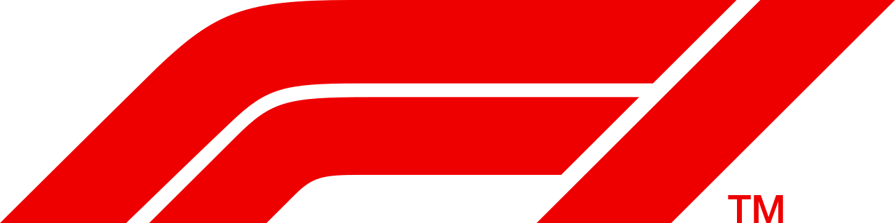
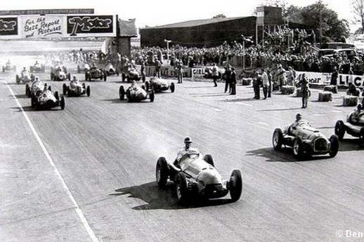
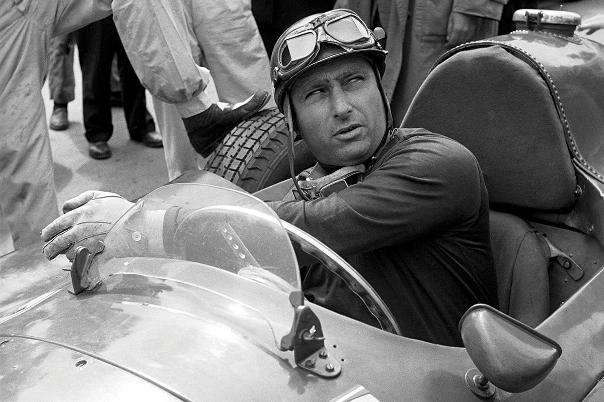
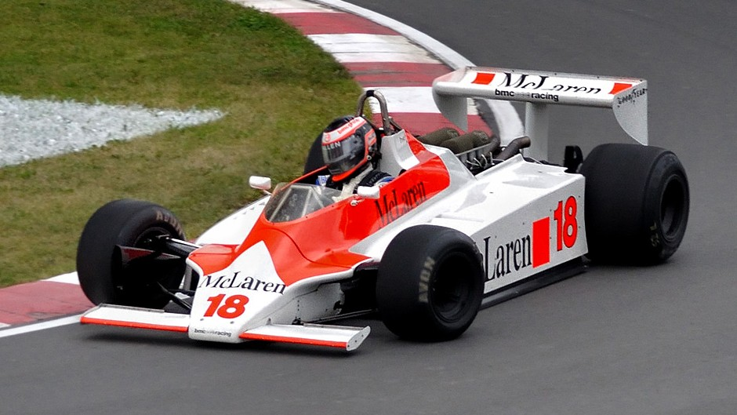
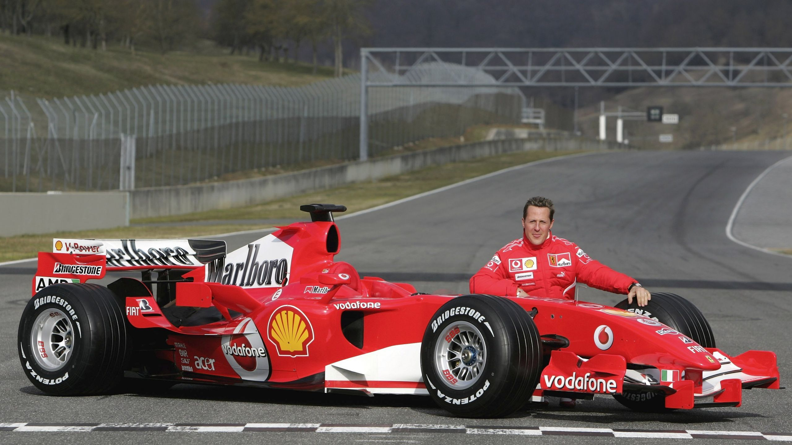

A Formula 1 több, mint csak egy sport - a sebesség, az innováció és az ikonikus rivalizások világává nőtte ki magát. Az 1950-es hivatalos indulása óta a világ motorsportjának csúcsává vált, és azóta is milliók követik világszerte.
Már a 20. század elején is léteztek Grand Prix versenyek Európában, amelyek hatalmas izgalmat keltettek. A sportot olyan legendás pilóták segítettek megalapozni, mint Tazio Nuvolari és Rudolf Caracciola. Az egységes világbajnokságra csak a második világháború után merült fel az igény.
Az első hivatalos F1-es világbajnokság 1950-ben indult Silverstone-ban (Egyesült Királyság), és ezzel kezdetét vette a Forma-1 globális története. Az első igazi legenda Juan Manuel Fangio lett, aki öt világbajnoki címet nyert az 1950-es években. Ugyanebben az időszakban egy fontos technikai váltás is történt: a Cooper Car Company 1958-ban bevezette a hátsó motoros autókat, amelyek gyorsan szabvánnyá váltak.


A 70-es és 80-as években az F1 népszerűsége szárnyalt, ami az intenzív versengéseknek és az újításoknak volt köszönhető. A legendás csaták Lauda, Hunt, Senna és Prost között mindenkit lenyűgözték, miközben a folyamatos újítások újraértelmezték a sportot. A csapatok a talajhatású aerodinamikával kezdtek el kísérletezni, ami lehetővé tette az autók számára a nagyobb kanyarsebességet a növekvő leszorítóerő miatt. Ebben a korszakban jelentek meg a turbófeltöltős motorok és a történelem legnagyobb F1-es autó legendái.

Az 1990-es évektől a Forma-1 egyre hatalmasabbá és technológiailag fejlettebbé vált. Michael Schumacher a 2000-es évek elején új rekordokat felállítva dominált a Ferrarival. 2014-től pedig a sport belépett a hibrid korszakba, amely a hatékonyságot és a fenntarthatóságot helyezte előtérbe. Ezt a korszakot a Mercedes uralta, Lewis Hamilton hat világbajnokságot szerzett a csapatnak. A digitális média térnyerésének és a Netflix Drive to Survive című műsorának köszönhetően az F1 népszerűsége robbanásszerűen nőtt meg, új rajongókat vonzott, és új piacokra terjeszkedett.

Kérdések
Mikor indult az első világbajnokság?
Melyik cég vezette be a farmotoros járműveket?
Milyen motorok jelentek meg a 70-es és 80-as évek körül?
Hányszoros világbajnok Lewis Hamilton?